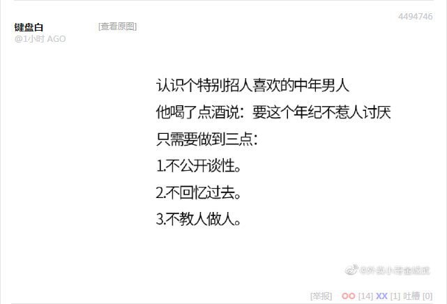
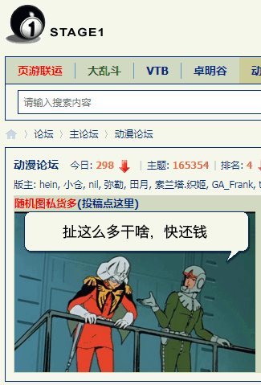

“既然你知道曲沃代翼是家务事，只要打点到了，中央就能承认既成事实；你也知道田氏代齐是篡党夺权，龙椅换种只要不改国号，体制就睁只眼闭只眼”，郭春海指导柴禾妞，“所以你就不用奇怪为啥色目情报掮客嘲笑当年败犬恼羞成怒气急败坏叫嚣‘粉碎四人帮’是政变但是中央表态前三十年后三十年是一个统一不可分割的整体了”。
“我知道了”，柴禾妞点头，“所以我不会奇怪为啥西肃慎后清国太祖高皇帝姓马不姓金，身为傻哔绿人却要运用人脉打通户部关系，强行注册为通古斯太君”。
“无论是五族共和还是五十五族共和，都是体制分封的铁帽子王位置，如果还没有礼崩乐坏的话①”，郭春海补充，“所以我们汉人为啥要操心通古斯太君内讧到底是家务事还是借壳上市？为啥要自带干粮替不远万里从西洋偷渡入境并获得东洋大力扶持的间谍特务卧底摇旗呐喊呢？”
“之前你说河殇派除了背后势力以及政治诉求无法被红色基因接受之外，对体制软肋的攻击倒是一针见血”，柴禾妞同意，“最起码‘补课论’没说错，没有经历过资本主义阶段就无法跨越卡夫丁峡谷，这才导致了封建主义在社会主义外壳之下的复活”。
“还是先娱乐再致死，今天换个口味，不说苏联政治笑话”，郭春海活跃气氛，“改成应景的新石器时代中国特色色目主义笑话，前一阵根据本地政治和意识形态斗争新动向现编的②，借鉴了色目情报掮客传播已久的原版，以彼之道还施彼身”。
“蛙蛤蛤蛤”，柴禾妞娱乐完毕，“然后九省通衢就成现在这样了？”
“九省通衢物华天宝人杰地灵，国士无双应有尽有，毫秒级别的响应速度”，郭春海说，“当时就跳出来一个白皮键盘常委，特别招人喜欢，喝了点酒之后面对香港记者谈笑风生③”。
“说啥了？”柴禾妞很好奇，“炒冷饭翻拍经典也是司空见惯”。
“丫说，身为一个长者，向你们传授一点人生经验，你们吖还是要提高姿势水平，想当年我身经百战见得多，哪个辣妹子没玩过？”，郭春海摇头晃脑，“当时我就念了两句诗‘天生一个仙人洞，无限风光在险峰’，妹子也很懂情趣，也念了两句诗‘花径不曾缘客扫，蓬门今始为君开’。然后就手抚后脑勺‘蛙蛤蛤蛤’的狂笑”。
“为什么你要强调白皮？”柴禾妞刚想起来这个细节，“你是说它穿了一身白衣？”
“因为色目人基本上都是白的，高鼻深目碧眼紫髯的那种，掺和过几千年了”，郭春海解释，“当然也有持不同审美观点者，除了三洲通衢那边白衣大食黑衣大食的典故之外，境内神神叨叨的白山派黑山派经常因为念经嗓门大小声调高低都能打得头破血流呢”。
“听说过，没见过”，柴禾妞搭腔，“不过九省通衢的美术兲才绘制了一幅漫画向人民群众普及常识，说黑底白条纹的斑马与白底黑条纹的斑马世代为敌”。
“外人看不出来它们之间有什么唯物主义区别，它们自己也说不出来有什么唯物主义区别”，郭春海补充，“全凭注册的时候由服务器管理员分配帐号，在哪个户口本上就继承哪拨的家学渊源，能活到换完牙就算久经考验的阿拉胡阿克巴战士，开始加入民族武装力量从此进行‘打冤家’的革命斗争”。
“那岂不是可以任凭幕后黑手安插各种跌宕起伏的情节了么？”柴禾妞最近在分析吟游诗人爆料，“从香港迁徙到之江的博导学家神出鬼没，一眼没瞅着就跳出来碰瓷，又是双胞胎什么的手足相残了，杀其父养其子作为一块抹布了”。
“还有从高雄迁徙到福建的熊学家呢”，郭春海补充，“比方说找人贩子买个残疾儿童从小灌输苦大仇深，当作工具刺客培养，真正的苦主倒是吃香的喝辣的享受青春顺便看热闹④”。
“要是在三洲通衢还能理解，低头不见抬头见，文无第一武无第二”，柴禾妞质疑，“都不远万里跑到我中华兲朝上国既来之则安之了，看着遍地卡菲勒韭菜割都割不过来，还搞内讧有点令人想不通”。
“再给你讲个色目笑话，说赎罪日战争之前阿拉伯太君准备了很久，打起来之后还发悬赏收购希伯来太君头皮，五美元一张”，郭春海活跃气氛，“然后俩阿拉伯忍者深入敌境，一觉醒来发现被荷枪实弹的摩萨德包围，一个喜出望外对另外一个说，‘哎呀这下我们可发财啦’！”
“你是说回族同胞没打过卡菲勒韭菜”，柴禾妞也知道在绝对充沛的武德面前，任何兵家理念都是徒劳，“那怎么最近几十年气焰越来越嚣张了呢？”
“一方面是幕后黑手撑腰，另一方面是绿教特色战略战术”，郭春海解释，“打不过韭菜就加入他，这话可以公开说出口，但是加入韭菜的时候要以‘祂欺也’原则讲一口流利韭菜话化作韭菜模样混进去，等到关键时刻再跳出来把脸一抹显出本相小人物改变历史走向”。
“请举例说明”，柴禾妞对假大空套话的忍耐性越来越低，虽然知道这些大道理都有用，但是教材和讲义的区别也是明摆着的，没有师傅领进门个人就很难修行。
“就说你最擅长的田园女权话题吧，市面上那许多女德班你也喷过不止一回了”，郭春海举例，“绿妞好歹还能裹个垃圾袋上街溜达，大家闺秀小家碧玉大门不出二门不迈，这辈子就只有从娘家后院到婆家后院，路上坐轿子还不能掀开窗帘往外看……到底谁更反动？”
“合着只能在俩烂苹果当中挑一个不够烂的啊”，柴禾妞问，“没有别的选择么？”
“你继续吹捧田园女权也可以，别忘了沙特是全球女权主义组织的最大赞助商”，郭春海讽刺，“自带干粮忙活半天都不知道给谁打工，幕后黑手肯定会大肆赞扬你这种高风亮节大公无私的纯傻哔”。
“你说遍地开花的女德班讲得那么过分，原来是傻哔绿人故意用来衬托自己不那么烂的托儿”，柴禾妞有点明白了，“真是一粉顶十黑”。
“也有马瓦力闯劲爆表的原因，二鬼子总是比鬼子更激进”，郭春海解释，“不然怎么才能在主子面前表现出与自己的反动历史划清界限呢？”
“你就直说傻哔绿人是怎么混进韭菜堆里的吧”，柴禾妞一不留神就被郭春海把话题扯远了。
“打着红旗反红旗是老一套，比方说‘大学之道，在明明德’这句”，郭春海举例，“哎，从绿皮书当中找几句话能搭上边，就算碰瓷成功，从此建立‘明德堂’道场可以开门收徒授课了”。
“傻哔绿人不是都去找阿訇毛拉早请示晚汇报么？”柴禾妞听说过影子官府的政治规矩和组织纪律，“已经把锤镰帮支部架空了，甚至一套班子两块牌子，办公场所都在洋葱庙里，门口贴张告示‘卡菲勒与狗不得入内’”。
“那是明面上的幌子，实际运作有点不一样，都是师傅带徒弟那种耳传面授”，郭春海举例，“你看南棒那个新天地教会是怎么发展信徒的，苏菲派的绿人就是怎么传教的，按照扶桑特色武德充沛影视动漫游戏当中的描述，就是开个道场还能世袭一把手”。
“你用明德堂举例是不是有什么深意吖？”柴禾妞又看了一眼那个简明绿教谱系图，“虽远必诛の强汉之龙裔，也费拉不堪跪在真实纳头便拜认贼作父充当马瓦力了？”
“实际情况恐怕恰恰相反，傻哔绿人是为了腾笼换鸟篡党夺权才故意碰瓷改姓刘的”，郭春海不惮以最大的恶意揣测，“之前你看过色目情报掮客那许多曰若稽古，啥‘华夏文明西来说’‘苏美尔就是夏朝埃及就是商朝’‘三星堆是希伯来太君文明’，都是捕风捉影，没有唯物主义证据支持，也没有来得及彻底销毁对立面的证据，但是虽远必诛の强汉之龙裔这事，可是发生在眼皮底下的”。
“如果是刘少奇的品种或海昏侯墓之谜，已经听你说过了”，柴禾妞想听点新鲜的。
“等到腾笼换鸟取得阶段性成果之后，党国高音喇叭就会循环播放砖家叫兽的划时代论文”，郭春海说，“说我们‘汉’人，最起码‘汉’家，本来是‘含米特人’，闪含哥俩儿好嘛，所以与色目人是同一种鸡巴”。
“其它鸡巴呢？”柴禾妞问，“我是说汉族当中除了‘J’以外的其它品种”。
“当然是死光光了”，郭春海轻描淡写的说，“在计划灭绝基本国策的严厉打击和残酷镇压之下，在极端组织恐怖袭击之下，在色目忍者流窜作案屠杀之下，在你们女权主义者威逼利诱之下，只会剩下一小撮国家一级保护动物圈养在神农架之类地方供色目太君观赏”。
“可是看你的表情，似乎不那么紧张，好像还挺轻松？”柴禾妞察言观色，对郭春海的危言耸听不以为然。
“因为这只是色目人一厢情愿的如意算盘，别人未必乐见其成”，郭春海解释，“就比方说梵蒂冈的方济各老头前几天感冒，色目情报掮客那叫一个欢腾，结果虚惊一场，检查结果不是肺炎。按照剧本，等它挂了之后才灭世，现在慌什么？皇上不急急死太监？”
“预告当中说的是‘在苦难中牧养主子の羔羊’吖，只要老头不挂，瘟疫就不会消停？”柴禾妞问，然后自我补充，“不对，即便老头挂了瘟疫也没必要消停，直接火山地震海啸饥荒战争，雪上加霜就可以了也”。
“战争消灭的是青壮年，而瘟疫消灭的是中老年”，郭春海说，“人口结构不一样就要对症下药，惦记着腾笼换鸟就需要早打大打打核战争，而不是投毒下药帮忙解决老龄化危机和养老金缺口”。
“所以兲朝主席台前三排的间谍特务卧底拼了命的救老头老太太，一定不能让民族英雄挽狂澜于既倒扶大厦之将倾的曲线救国丰功伟绩得逞？”柴禾妞学会了不惮以最大的恶意揣测中央，谁在中央揣测谁。
“你知道之前一切正常的情况下，医疗养老资源大头消耗在哪里么？”郭春海自问自答，“是离休干部，以及厅级以上退休干部，待遇高出一个数量级不止，这批老头老太太才是党国的包袱，而不是普通贱种屁民”。
“略有耳闻”，柴禾妞承认尚未见多识广，“民族英雄准备怎么消灭这帮人以便使得我中华兲朝上国轻装上阵和平崛起呢？”
“有一部国产精品电影《人到中年》，1982年上映，不是名字相同的肥皂剧，刚好是讲医疗工作者的故事”，郭春海查找本地文件，“这次遭瘟之后，党国高音喇叭捐献了那许多影视剧版权，也没说把这部电影重播，肯定是心里有鬼”。
“唔，马列主义老太太”，柴禾妞上网搜索简介，“离退休干部家属的典型”。
“你可以先看同名小说”，郭春海没找到视频备份，倒是找到了文本文件，“境内每个军休所干休所附近，都充沛着这种货色，通常年龄与素质呈反比，从革命年代混过来的才是爽文中常见的下三滥流氓龙傲天偏偏还官运亨通，完成组织交代的革命任务之后就急流勇退带着娇妻美妾找个疗养院安度晚年了⑤”。
“你不是说从疾病到疫苗的距离，只需要死掉六个白人么？”柴禾妞开始看小说，随口问，“看现在的公开报道，欧美都闹起来了，已经死掉的不止六个了吧？”
“谁知道呢，也许在幕后黑手看来，这些死者都不算白人”，郭春海不惮以最大的恶意揣测，“比方说动辄炫耀鸡巴尊贵的那些豪门贵种走兽派豢养的色目情报掮客放话，引用复旦残联下属滴血认亲实验室出具的鉴定报告，说那些乍一看的白皮不过是杂种而已，死掉多少都出不来疫苗”。
“不对吧？疫苗又不会从天上掉下来，研发也需要时间呢”，柴禾妞质疑，“刚好死掉六个纯种白人的时间之内，谁敢拍胸脯保证出成果？”
“不知道，看新闻说二十种疫苗同时研发中，并且有色目文艺爱好者放话说实验用人形耗子有知情权会影响研究进度”，郭春海不惮以最大的恶意揣测，“如果真的能及时出现疫苗，应该是早就有了，就等到关键时间点再拿出来”。
“如果疫苗已经存在的话，应该在谁手里？”柴禾妞问，“你觉得顶尖医疗水平把持在哪个阵营当中？”
“也许白人也是推到前台的烟幕弹障眼法，换一种思路，谁最强调品种的纯粹性？”郭春海大胆假设小心求证，“也许以色列死掉六个据称几千年颠沛流离都从未混血的纯种希伯来祭司之后，疫苗就出来了”。
“你说‘纯种’虽然有点夸张，但我还能理解，看以色列那情况就好比人种博物馆”，柴禾妞奇怪一向咬文嚼字的郭春海提到傻哔绿人的时候使用‘阿訇’‘毛拉’术语，但是刚才提到希伯来太君就用了‘祭司’的称呼，“不应该是‘拉比’么？”
“所谓‘拉比’，就好比党校培训的党史专业出身的分管党建工作的支部常委副书记那种角色，通常精通‘显宗’理论，就是公开出版的《塔纳赫》《塔木德》什么的”，郭春海解释，“而‘祭司’嘛，就是在乍一看自己人的内部划分出真·自己人之后负责传承‘密宗’理论，也就是‘卡巴拉’什么的”。
“这希伯来密宗还能密到哪里去？”柴禾妞听说过卡巴拉这个词，但是看市面上的通俗读物和色目情报掮客的常识普及，感觉不过如此而已。
“看色目文艺爱好者放话，应该是崇拜所罗门王的七十二柱魔神什么的”，郭春海打比方，“就好比说吟游诗人一拍脑袋说猢狲学了七十二变，市面上的粉丝就强调‘可不是变成七十二种东西哟’，然后居然脑补出全套七十二种神通来”。
“说法不止一种吧？”柴禾妞问，“持不同学术观点者怎么办？”
“你看苏菲派绿人也知道，吵起来就另立门户开道场了，自称正统喷其它观点是异端”，郭春海打比方，“只不过希伯来太君的政治规矩和组织纪律不太一样，学术纠纷总是混合军事斗争，输家就撤销一切公职开除出教，从此伪装成基督徒或者傻哔绿人混入韭菜堆里潜伏下来，只有赢家才保留‘选民’身份继续呆在社区里面”。
“传说中所罗门武德充沛希伯来兲命昭昭的时代，还没有基督教吧？更没有绿教”，柴禾妞质疑。
“那就是两次著名的分裂吖”，郭春海也恨铁不成钢，“公元一世纪那时候没有基督教，只有‘犹太教耶稣派’，斗争失败之后惦记着东山再起卷土重来，然后脑补了全套设定，以同人逼死原著”。
“我好像听过谁强调‘公元一世纪的基督教’，对了，就是‘雅威见证人’，上门传教烦不胜烦”，柴禾妞想起来以前被讲一口流利汉语化作汉人模样混进汉人堆里的基督徒扯着啰嗦的场景，“听说在世界上大部分国家地区都当成邪教对待”。
“这帮人强调圣经一字不得更改，把耶少爷活蹦乱跳的时期视为有史以来最好的黄金时代”，郭春海说，“口口声声‘三代之治’‘克己复礼’，听上去就不是什么好东西”。
“这是要复辟？”柴禾妞问，“难道耶少爷还有嫡传接班人？”
“没有儿子也有弟弟，当然可能不是一个妈生的，比方说洪秀全”，郭春海嘲笑，“希伯来革命理论与兲朝革命实践相结合，就是捧起个‘哪儿来的野种’之后‘挟兲子以令诸侯’，已经被啥‘东方闪电’全盘继承下来了也”。
“听起来耶老爷它们家怎么那么像玉皇大帝和王母娘娘呢？”，柴禾妞想起市面上基督徒深入基层专挑老头老太太接地气的传授希伯来革命理论时候的胡说八道，“还有说是牛魔王、铁扇公主和玉面狐狸的，红孩儿被疙瘩头指使阴阳人逮走之后，然后庶出的洪秀全没来及接班就被嫡母打落凡间”。
“你知道‘清真’俩字本来是道教术语么？你知道利玛窦最初剃个大光头自称‘西僧’么？”郭春海提醒，“这也是西学东渐，反正虱子多了不痒债多了不愁，异端在老窝就遍地都是，也不在乎兲朝多几个。韭菜爱听什么就说什么，等哄得韭菜飘飘然以为兲命在己惦记着因陋就简大干快上建设新石器时代中国特色社会主义现代化强国于是借了驴打滚的高利贷之后，屎绿配色的邪教徒再翻脸⑧也来得及”。
“还是你不忘初心牢记使命抓大放小分清主要矛盾和次要矛盾”，柴禾妞称赞郭春海，“甭管东拉西扯到哪里，灭绝人性の真·资本主义这根弦总是绷得紧紧的”。
“当然，有钱能使鬼推磨，只要能赚钱，商人不介意舔鞋底，这可是它们自己引以为荣的革命家风”，郭春海讽刺，“教义都说了，腆着脸上门以传教为名放贷，左脸被打了就把右脸送过去，只要傻哔韭菜上套，再翻脸也来得及”。
“看过色目情报掮客到处传播的各种搞笑版八荣八耻”，柴禾妞同意，“只要色目金融家定了前倨后恭的革命路线，剩下的就是干部问题了”。
“衡量社会治安的标准是社区色目比例，存在着统计上的相关性”，郭春海分析大数据，“只有零星傻哔绿人的时候，各个和蔼可亲做良民状，随着傻哔绿人所占比例越来越大，色目政治诉求就越来越不可理喻，直到把其它鸡巴都撵走，然后以全民公投名义宣布独立为止”。
“境外的事情听说过，境内似乎没有”，柴禾妞说，“毕竟红旗飘扬的人民民主专政铁拳不是吃素的”。
“那是主席台前三排不让人民群众知道，比方说云南沙甸”，郭春海提醒，“当然你自己搜还能找到，毕竟‘拨乱反正’了嘛，当地都立了一块锤镰帮磕头认罪纪念碑供鞭尸用”。
“然后当地就不独立了？”柴禾妞恶补之后问。
“怎么可能，只不过换了一种说法”，郭春海解释，“说沙甸伊斯兰共和国客观存在，不需要额外宣布法理独立。锤镰帮中央既不承认其主权也不承认傻哔绿人的治权，只不过照本宣科把当地阿訇任命为党委书记而已”。
“国中之国，国将不国”，柴禾妞摇头，“然后傻哔绿人就得寸进尺蹬鼻子上脸，在昆明火车站宣示对整个大理国拥有主权了吧？”
“你要结合吟游诗人放话理解”，郭春海提醒，“说苏州有个鲜卑贵种‘慕容复’，到处乱转碰瓷企图‘复辟’，最有可能成功的有两次，竞选宁夏驸马企图借鸡生蛋的时候输给了捷屌先登的贼秃，去云南认贼作父企图鸠占鹊巢借壳上市的时候输给了‘哪儿来的野种’⑥”。
“现在我明白为什么自称西肃慎后清国太祖高皇帝的逗哔精神病自大狂姓马不姓金了”，柴禾妞恍然大悟。
“你以为你知道的真的是你以为你知道的么？”郭春海嘲笑，“大规模地质运动时代结束以来，地缘政治就没变过，即便是苏伊士巴拿马两条运河，也不过是锦上添花罢了”。
“我知道这个‘西’字的意义，当年大和武德就没打过潼关三峡，长安渝州作为陪都稳如泰山”，柴禾妞企图证明自己有地缘政治学家的潜质，“鲜卑武德天下布种的时候，放在东边的都是幌子炮灰，随时可以引狼入室把膏腴之地打个稀巴烂，然后犄角旮旯的杂胡野种牛鬼蛇神就在鲜卑贵种的煽动下，以‘七大恨’名义倚仗赞助商提供的‘十三副铠甲’起兵，武德充沛兲命昭昭逐鹿问鼎”。
“很好，你从这个角度出发，再看国际化大都市华语第一精日论坛上面那帮口称‘册那’的娱乐至死の色目逗哔，是不是有了新的思路？”郭春海称赞，“再结合并州以晋阳为核心的鲜卑基本盘根据地塌方式腐败的旧闻，就能明白大野在普六茹跑路到扬州并被斩首的情况下，一路急行军在十二个时辰之内转进到长安登基称帝的野望了”。
“最近世界各国高层领导感染新时代王冠肺炎的新闻不少，斩首行动这个字眼也开始流传起来了”，柴禾妞若有所思，“看来精确制导定向打击投毒下药，果然是剧本钦定的篡党夺权手段”。
“肺炎传染，面瘫可不传染，于是传播方式可供实验”，郭春海摸着脸，念了两句歌词，“可谁知道第二天早晨醒来洗完了脸，疯狂不见了，恐惧出现了”。
“面瘫是自愈性疾病我知道，这次肺炎也有很多业内说是自愈性疾病”，柴禾妞举一反三触类旁通，“其实我觉得，都是没有特效药也没有疫苗，只能凭借免疫力硬挺的委婉说法”。
“换一种思路，明知道可以自愈的情况下，还可以危言耸听制造紧张气氛，用来推销安慰剂挣外快”，郭春海提醒，“人无横财不富，马无夜草不肥，情报工学神童の老公，生化武器兲才の老婆，真是绝配吖⑦”。
“我知道你在说谁家”，柴禾妞最近打哑谜水平见涨，“明知道病入膏肓无药可救的情况下，也是可以推销安慰剂挣外快，收入说不定比不疼不痒的小毛病更多”。
“上次闹起来是国际一流和谐宜居之都神仙打架，武警北京总队第二医院很明显有鲜卑武德背景，高学历精英社交圈则从属于另外一拨武德，与受害者出身的长安是合作关系”，郭春海补充说明情况，“只看事实本身，采用花旗国已经淘汰的西医疗法没效果才会被质疑，那我问你，如果采用花旗国压根就不批准的中医药治疗癌症，还会闹起来么？”
“应该不会”，柴禾妞想了一下说，“就看最近党国高音喇叭高调报道境内从业者大肆炒作中西医结合疗效显著，也知道以为自己与时俱进代表了历史前进方向结果在主席台前三排看来纯属不自量力螳臂挡车的傻哔会被历史の五对负重轮碾为齑粉，历史由胜利者书写，只有胜利者才能代表”。
“看来你已经知道原因了，那我就换个例子”，郭春海旁征博引，“当年人民子弟兵进藏的时候，也有医疗工作者随行，在当地运用与时俱进的现代医学手段惩前毖后治病救人，然后平时拉屎撒尿也作为有效成分结合草根树皮配置藏药给农奴当安慰剂的活佛不乐意了”。
“后面的事情我知道了，藏族传统医疗体系从业人员反攻倒算，然而并没有什么卵用，达赖跑路了”，柴禾妞在历史学到初一的时候就听说过梗概，但是不太清楚细节，“这只是一个原因吧？不仅医疗，所有传统行业都算上，反攻倒算其实也是当地贵种的共识”。
“就是这样，你知道什么是打左转向灯往右转，就知道什么是踩着油门开倒车”，郭春海嘲笑，“自从1940年开始，变速箱当中倒挡就已经是标准配置了，历史の五对负重轮也不例外”。
“你这话听上去有点‘何不食肉糜’的感觉，那许多地方都靠种植中草药维持生计，从地里直到药厂直到中医院，整条产业链不知道养活了多少人。你也惦记着‘反正外国的盘尼西林也用不完’么？你也配姓宋？”柴禾妞因为亲戚是国际卫生组织定义的‘替代疗法’之从业者，从感情角度出发表达了委婉的批评，“正如海运兴起之后运河就衰落了，但在当时扬州市委市政府拼命炒作‘奈何十万人生计’，于是中央强行喊停河海联运重大战略项目，气得惦记着夺取漂没领导权的海贼王暴跳如雷呢”。
“这不是我的立场，我既不是传统医学从业者也不是现代医学从业者，更不是血脉纯正の商人”，郭春海不以为然，“这是国际一流和谐宜居之都高学历精英社交圈的立场，前面都说过了是神仙打架，谁武德充沛谁说了算”。
“我觉得还是鲜卑武德表面上充沛一些”，柴禾妞判断，“就从‘武警北京总队’这字眼也能看出来，背后肯定有高第良将撑腰，具体是不是从足协主席转职的就不知道了”。
“未必”，郭春海有不同意见，“程沝的屌，朱圭的脚，顾林的手，陆炎的口，四大舔狗斗将军”。
- ① 《知乎问答№161：如何看待穿青人被从汉族中分化出来？》
- ② 《豆瓣日记［20191212］斗贵种の叫牌体系》
一个人走过海旁，看见另一个人想跳海自杀。
他走上前去劝说「先生，不要跳下去！」
那人问道：「为甚么？」
他说：「生命是美好的嘛！你是无神论者还是有宗教信仰？」
那人答：「我有宗教信仰。」
「佛教、道教、回教还是基督教？」
「基督教」
「罗马天主教还是新教？」
「新教」
「我也是新教呢！圣公会还是浸信会？」
「浸信会」
「太好啦！我也是浸信会，你是耶老爷浸信会还是耶少爷浸信会？」
「耶老爷浸信会.」
「真是太奇妙啦！我也是，那你是原教旨的耶老爷浸信会还是改革派的？」
「改革派的」
「太好了，1879年的改革派还是1915年的？」
「1915年的改革派。」
那人朝他屁股一脚把他踢进海里：「异端！去死吧！」原版异端笑话 在这全票冻蒜人民领袖在位，河清海晏歌舞升平的我中华兲朝上国，有俩「回族同胞」在物华天宝人杰地灵の九省通衢碰头互相嘘寒问暖：
「你是色目人还是汉人？」
「色目人。」
「太好了，我也是。你信清真教还是清真古教？」
「清真教。」
「哎呀真巧。你高举的伟大旗帜是哈希姆家纹还是伍麦叶家纹？」
「伍麦叶。」
「赞美阿拉。你紧跟的光荣目标是奥特曼武德还是瓦哈比缓则？」
「瓦哈比缓则。」
「感谢真主。你正确奋斗的方向是忠君还是爱国？」
「爱国。」
「有缘千里来相会啊。你准备支持立宪还是共和？」
「共和。」
「咋看你就这么顺眼呢。你希望普天之下莫非王土呢还是联省自治？」
「联省自治。」
「来自五湖四海为了同一个革命目的走到一起来喽。你觉得说话算数的应该是苏丹呢还是内阁？」
「内阁。」
「越来越和谐了。你认为各个门宦的席位是动态分配呢还是固定比例？」
「固定比例。」
「历史的进程开始了。你觉得门宦代表选拔标准应该尊尊亲亲呢还是举贤而上功？」
「举贤而上功。」
「那就看个人的奋斗喽。你对成功的定义究竟是自然叫牌法呢还是精确叫牌法？」
「精确。」
「去死吧！卡菲勒！」新石器时代中国特色色目主义异端笑话 - ③
- ④ 《边城浪子》《天涯明月刀》
- ⑤ 《鹿鼎记》
- ⑥ 《天龙八部》
- ⑦ 李彦宏＆马东敏
- ⑧